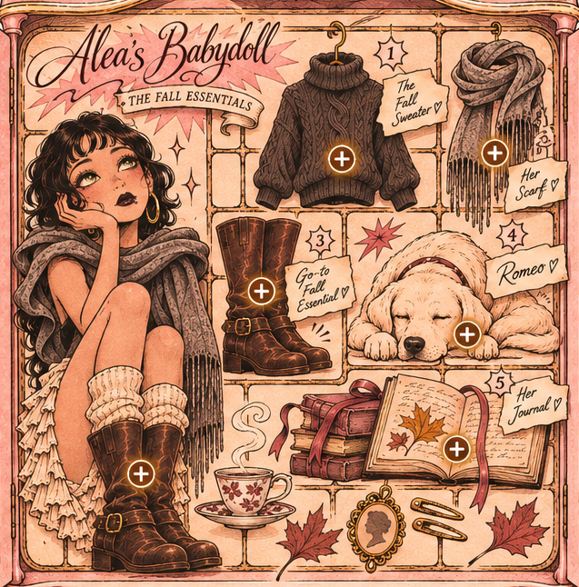

A collection of the people, places, memories, and little things that make life beautiful. Part scrapbook, part sketchbook, part love letter to the world as I see it.
A living collection. More dolls to come with every new drop.
Rue's Babydolls / Volume I / Doll No. 001
Alea
the language of the earth
A portrait from Rue's growing archive
Alea's Babydoll · The Fall Essentials

Alea's little world
Open the doors, then select an object to discover her fall essentials.
An illustrated collection of little things she loves
A poem for Alea
the language of the earth
some people are born of the earth,
others spend their lives learning her language.
she has always spoken it.
she knows the weight of a wounded soul,
whether it walks on two feet
or four.
she has never mistaken silence
for the absence of something to say.
she does not ask the sage to burn,
but teaches wounded things
to find their light again.
she listens to the things
the world has learned to overlook,
and gives their quiet
somewhere to belong.
and when the world forgets its gentleness,
she reminds it
that even the darkest days
are capable of growing something beautiful.
some people carry kindness
like something carefully kept.
she wears hers openly.
a closet full of borrowed things,
a laugh that finds its way
into an ordinary afternoon.
she has always understood
that showing up for someone
is its own kind of language.
and when the world asks
who will stand beside you,
she does not wait
for someone else to answer.
there is something beautiful
about a person who gives
without making a performance
of what they have given.
perhaps that is her gift,
to remind the people around her
that generosity is not measured
by what we have to spare,
but by what we choose to share.